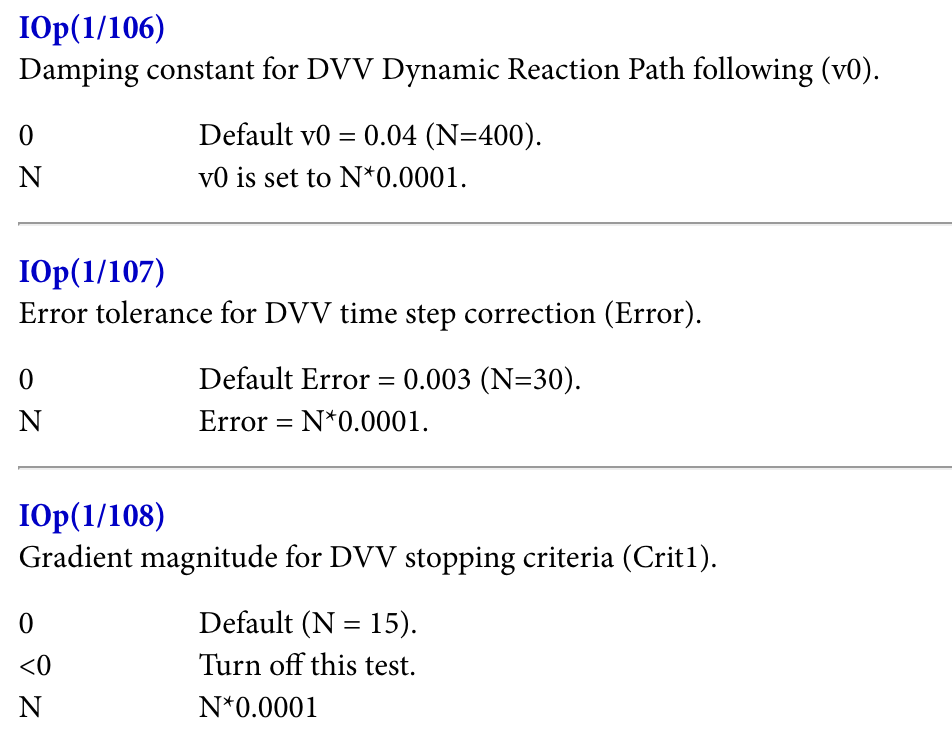

May 17, 2025 A traditional iconographic depiction of Abraham's visitors.
I did not enjoy John Mark Comer’s book The Ruthless Elimination of Hurry.
Comer’s book is written to people trying to find meaning in a world that feels rushed, distracted, and isolated. At the time of writing, Comer was a Protestant pastor in Portland, Oregon, but he’s since stepped back to focus on creating resources for spiritual formation (like this book).
The book takes its title from a quote by Christian philosopher Dallas Willard:
Hurry is the great enemy of spiritual life in our day. You must ruthlessly eliminate hurry from your life.
In the book, Comer argues that hurry is incompatible with love (p. 23), patience (p. 23), joy (p. 25), peace (p. 25), wisdom (p. 52), and gratitude (p. 52). Hurry is a sign that we aren’t accepting our God-given limitations (p. 65), and hurrying causes irritability, restlessness, distraction, and isolation (pp. 27, 58, 89).
The base state of man before the modern era, Comer argues, was unhurried (pp. 42–45). God rests in Genesis 1, and Jesus himself never hurried. The cure to our modern malaise, thus, is to embrace a life marked by slowness, solitude, simplicity, prayer, and rest. Comer advocates taking a literal 24-hour sabbath, rejecting consumerism, and trying to find a “perpetual Zen-like state of Jesus-derived joy and peace” (p. 251).
Much of what Comer says is good. But the central argument of his piece, that hurrying should be eliminated, doesn’t seem defensible to me. Comer makes very few direct arguments that hurrying itself is bad, instead using hurrying as a metonym for a vaguely defined bucket of negative modern traits: isolation, anxiety, fear, and so on.
This is a classic example of a motte-and-bailey argument, popularized by Scott Alexander on Slate Star Codex. In his post “All In All, Another Brick In The Motte,” he defines a motte-and-bailey argument thusly:
So the motte-and-bailey doctrine is when you make a bold, controversial statement. Then when somebody challenges you, you retreat to an obvious, uncontroversial statement, and say that was what you meant all along, so you’re clearly right and they’re silly for challenging you. Then when the argument is over you go back to making the bold, controversial statement.
Comer does exactly this. “You must ruthlessly eliminate hurrying” is a bold, controversial statement—but the statement he actually defends is more like “anxiety and isolation are bad,” which doesn’t have quite the same transformative implications for modern Christian living.
I’ll go a step further and try to defend the assertion that hurrying can be good, actually. Here’s Genesis 18:1–8 (ESV), when Abraham receives God at Mamre (emphasis added):
And the Lord appeared to Abraham by the oaks of Mamre, as he sat at the door of his tent in the heat of the day. He lifted up his eyes and looked, and behold, three men were standing in front of him. When he saw them, he ran from the tent door to meet them and bowed himself to the earth and said, “O Lord, if I have found favor in your sight, do not pass by your servant. Let a little water be brought, and wash your feet, and rest yourselves under the tree, while I bring a morsel of bread, that you may refresh yourselves, and after that you may pass on—since you have come to your servant.” So they said, “Do as you have said.” And Abraham went quickly into the tent to Sarah and said, “Quick! Three seahs of fine flour! Knead it, and make cakes.” And Abraham ran to the herd and took a calf, tender and good, and gave it to a young man, who prepared it quickly. Then he took curds and milk and the calf that he had prepared, and set it before them. And he stood by them under the tree while they ate.
In the above passage, Abraham hurries and tells others to hurry. I think it’s pretty clear from context that Abraham’s behavior here is correct hospitality, not sinful, since God immediately blesses Abraham (v. 10) and says he’s been chosen ”to keep the way of the Lord by doing righteousness and justice” (v. 19).
Here’s a few other passages defending the practice of hurrying, which I will summarize for brevity’s sake:
Lot is commanded by angels to flee in a hurry from Sodom (Genesis 19).
In Exodus 12, the Passover meal is to be eaten in haste.
After Ziklag is raided and taken captive by the Amalekites, David and his soldiers pursue them until a third of his army is too tired to continue (1 Samuel 30).
In 2 Kings 4, Elisha commands his servant Gehazi to “run at once” to meet the Shunammite woman.
After Mary receives the revelation from Gabriel, she “went with haste” to Elizabeth (Luke 1:39).
In Luke 15, the father of the prodigal son runs out of the house, and then commands his servants to “bring quickly” the best robe.
In Acts 8, Philip runs to the Ethiopian eunuch in his chariot, following the direction of the Holy Spirit.
In 2 Timothy, Paul twice urges Timothy to come and join him “soon” and “before winter” (vv. 9, 21).
These points may seem obvious—clearly, if Amalekite raiders carried off your family, you would hurry after them! But even a trivial example like this demonstrates that hurrying is not intrinsically opposed to the will of God.
Comer also argues that Jesus himself never hurried (p. 92). This is debatable—Mark uses the word “immediately” to describe many of Jesus’s actions, but that may reflect a Markean narrative style more than the actual pace of actions. Jesus himself commands Zaccheus to hurry (Luke 19:5), and his anger cleansing the temple and agony at Gethsemane should be sufficient to dispel the idea that Jesus perpetually existed in a “Zen-like” (p. 251) stoic state. Stress is not incompatible with sanctification.
Comer further argues that we’re called to walk with God, not run with him (p. 23). This is quite literally false! In 1 Corinthians 9:25–27, Paul uses the metaphor of running to convey the discipline, self-control, and perseverance required for mature Christian living:
Do you not know that in a race all the runners run, but only one receives the prize? So run that you may obtain it. Every athlete exercises self-control in all things. They do it to receive a perishable wreath, but we an imperishable. So I do not run aimlessly; I do not box as one beating the air. But I discipline my body and keep it under control, lest after preaching to others I myself should be disqualified.
Equating maturity with a restful, non-stressed life sets Christians up for disappointment. Hebrews 11 specifically highlights the heroes “of whom the world was not worthy” who “went about in skins of sheep and goats, destitute, afflicted, mistreated” (vv. 37–38). A stressful life doesn’t mean, as Comer argues, that “something is out of whack” (p. 85). God’s rest will come, but it might not come today.
The conclusion here is not that we should hurry more. Most people hurry for bad reasons, stuck chasing selfish desires or climbing social ladders in pursuit of an elusive fulfillment. But the call of Christianity is not to abnegate these bad desires but to align them with God’s will. As Rene Girard says in I Saw Satan Fall Like Lightning (p. 13, emphasis original):
What Jesus invites us to imitate is his own desire, the spirit that directs towards the goal on which his intention is fixed: to resemble God the Father as much as possible.
What we are willing to hurry for reflects what we care about. We see this reflected in the passages above: Abraham hurries to show hospitality and welcome God into his life, David hurries to save the captives, and Mary & Philip hurry to share the good news of the gospel. We should care enough about these things that we’re willing to hurry for them.
Comer’s call to a life of virtue, peace, and rest is excellent—and at the margin, he’s probably right that most people should hurry less in their lives. But the central claim of the book is just not correct. The vision of Christian maturity contained in The Ruthless Elimination of Hurry seems a little too close to California-style Zen Buddhism and other modern mystical practices to fully align with Scripture, and I think this is bad.
Thanks to Taylor Wagen, Tony Robinson, Elias Mann, Jonathon Vandezande, and Chloe Wagen for helpful discussions, and for Ari Wagen for originally pointing me to read Girard.
In scientific computation, where I principally reside these days, there’s a cultural and philosophical divide between physics-based and machine-learning-based approaches.
Physics-based approaches to scientific problems typically start with defining a simplified model or theory for the system. For instance, a scientist attempting to simulate protein dynamics might start by defining how the energy of a system depends on its coordinates by choosing (or creating) a forcefield. Once a model’s been selected, numerical simulations are run using the model and the output of these simulations is analyzed to produce a prediction.
Physical simulations like these are extensively used today in climate modeling, orbital mechanics, computational fluid dynamics, and computational chemistry. These approaches are typically robust and relatively easy to interpret, since the underlying theory is perfectly known. Still, it’s often possible to get very complex behavior from a small set of underlying rules. Application of Newtonian gravitation, for instance, gives rise to the chaotic “three-body problem.” This combination of simple physical rules and complex emergent behavior is what makes physical simulations so powerful: starting from a well-understood model, it’s possible to gain non-trivial insights about complex systems.
ML-based approaches to scientific computation turn all of this upside down. Many ML models directly map input to output without any intermediate subtasks, making it difficult to interpret what’s going on. While physics-based methods can often extrapolate from simple test cases to complex emergent behaviors, ML-based methods frequently struggle to predict behaviors outside of what they’ve seen before. Still, ML-based methods are often far more efficient than physical methods and, since they’re not constrained by a specific theoretical framework, can handle complex phenomena where the underlying functional form is not known.
When these two subcultures collide, things often get nasty. Proponents of physics-based modeling frequently allege that ML is fundamentally unscientific, since science is all about extrapolation, and that the unreliability and interpretability of machine learning makes it ill-suited for anything except hacking benchmarks.
On the other side of the aisle, machine-learning advocates claim that physics-based modeling is basically a way for scientists to feel smart and look at pretty pictures and will never be able to capture sufficient complexity to be useful. If you think I’m exaggerating, I’m not—here’s Pranam Chatterjee discussing why structure-based models like AlphaFold are “irrelevant” to disease (emphasis added):
…if we believe Anfinsen’s hypothesis: the sequence should encode everything else, including structure. Why do you need to look at the structure of the protein to understand it? I have concluded people just feel more satisfied looking at a protein, rather than trusting an implicit language model to capture its features. Hence the Nobel Prize.
For Pranam, the physical assumptions made by models like AlphaFold—that proteins have a three-dimensional structure that’s relevant to their biology—mean that these models are incapable of describing the complexity of reality. Contra Pranam, the point that I want to make in this piece is that there’s no reason why physics- and ML-based approaches should be so opposed to one another. In fact, I’m becoming convinced that the future looks like some hybrid of both approaches.
Why? One of the big limitations of physics-based methods, at least in drug discovery, is that the underlying models often aren’t expressive enough and can’t easily be made more expressive. Molecular forcefields have only a handful of terms, which means that they can’t easily represent coupled dihedral rotation, π–π stacking, and so on—let alone bond-breaking or bond-forming processes—but even optimizing empirical parameters for all these terms quickly becomes a laborious and hard-to-scale process. In contrast, ML-based methods can scale to millions of empirical parameters or beyond without becoming intractably complex or overfit.
On the other hand, the big advantage of physics-based approaches is their generalizability—even simple rulesets, like cellular automata, can lead to immensely complex emergent behavior. This sort of extrapolation is rarely seen in scientific ML projects. A recent blog post from Pat Walters makes the observation that most cheminformatic models don’t seem capable of extrapolating outside the dynamic range of their training data. This is surprising, since even the simplest of “physical” models (like a linear equation) are capable of this extrapolation.
If a hybrid approach is to work, it must be able to capture the strengths of both methods. One of the simplest ways to do this is an energy-based approach, where scientists don’t predict an output parameter directly but instead learn an energy function which can be used to indirectly predict an output. (Yann LeCun has advocated for this.) This adds some test-time complexity, since additional computation is needed after inference to generate the final output, but also constrains the model to obey certain physical laws. (If you want to predict forces, for instance, it’s often best to do so through differentiating the predictions of an energy model, since doing this guarantees that the outputs will be a valid gradient field.)
Physics-informed ML approaches can also resolve the interpolation/extrapolation problem. Since physical equations are well-suited to extrapolation, applying a physical model to the output of an ML layer can convert interpolated intermediate states to extrapolated final results. This sort of extrapolation is well-documented in neural network potentials—for instance, ANI-1 was trained only on molecules with 8 or fewer heavy atoms but proved capable of extrapolating to significantly larger molecules with good accuracy.
One fair criticism of these hybrid physics–ML approaches is that they often require much more test-time compute than pure-ML methods: optimizing a geometry with a neural network potential can require hundreds of intermediate gradient calculations, while in theory an ML method could predict the correct geometry with a single step. But in practice I think this is an advantage. Scaling test-time compute has been an incredible boon for the LLM space, and chain-of-thought reasoning models like OpenAI’s o3 and DeepSeek-r1 are now the gold standard. To the extent that physics-informed ML methods give us the ability to spend more compute to get better answers, I suspect this will mostly be good for the field.
At Rowan, we’ve recently published a few papers in this area—Starling, an energy-based model for predicting microstate distributions and macroscopic pKa, and Egret-1, a family of neural network potentials for bioorganic simulation—and I expect we’ll keep working on hybrid physics–ML approaches in the future. Others seem to be moving in this direction too. The recent Boltz-1x model (now on Rowan!) from Gabri Corso and co-workers incorporates inference-time steering for superior physical accuracy, and Achira’s written about the merits of “a third way” in simulation built around “harmonization of the theoretical and the pragmatic.”
There’s immense room for creativity at the intersection of physics and machine learning. Virtually any part of a complex physics-based workflow can potentially be replaced with a bespoke ML model, leading to almost limitless combinatorial possibilities for experimentation. Which combinations of models, algorithms, and architectures will prove to be dead-ends, and which will unlock order-of-magnitude improvements in performance and accuracy? It’s a fun time to be working in this field.
Appendix:
I asked my co-founder Eli what he thought of this piece. He pointed out that the amount of physics one should incorporate into an ML model depends on the amount of data and the dimensionality of the problem. I asked him to explain more, and here’s what he wrote:
In ML terminology, incorporating information about the modality on which you are predicting into the design of the model is called adding inductive bias. One example of this for atomistic simulation is enforcing Euclidean equivariance into a model. This explicitly ensures that any spatial transformation to a model’s input is reflected in its output. This does ensure that physical laws are followed but also increases the computational complexity of the model, limiting system size at inference time and inference speed.
Some neural network potentials like Equiformer enforce equivariance in every operation within the model to ensure physical laws are always followed, while others enforce it only for inputs and outputs, relaxing constraints for intermediate model operations. Models like Orb-v3 don’t enforce equivariance at all, but incorporate dataset augmentation and unsupervised pre-training techniques to improve sample efficiency and learn physical laws.
As dataset size and diversity increase, we may see less of a need for physical inductive bias in models. One place we’ve seen this is with convolutional neural networks (CNNs) and vision transformers (ViTs) in computer vision: CNNs have built-in translational invariance whereas ViTs do not include any spatial inductive bias but are theoretically more flexible. We see ViTs outperforming CNNs only as dataset size and model size pass a certain threshold. If we assume that a similar pattern will hold for atomistic simulation, we might expect that the dataset size at which this threshold occurs will be greater, as molecular simulation has more degrees of freedom than computer vision.
I think this is a good point—thanks Eli! More abstractly, we might expect that incorporating explicit physics will help more in the low-data regime, while pure ML approaches will be more effective as data and compute approach infinity.
Thanks to Ari Wagen, Jonathon Vandezande, and Eli Mann for reading drafts of this post.
With apologies to Andrew Marvell. If you haven’t read “To His Coy Mistress”, I fear this won’t make much sense.
* * *
Had we but funding enough and time,
This coyness, founder, were no crime.
We would sit down, and think which way
To build, and pass our slow run-rate’s day.
Thou by the Potomac’s side
Shouldst SBIRs find; I by the tide
Of El Segundo would complain. I may
Fund you ten years before the first customers pay,
And you should, if you please, refuse
Till the market supports dual-use.
Your annual revenue should grow
Vaster than Boeing’s and more slow;
An hundred years should go to build
Thy initial demo, until the warehouse filled;
Two hundred years for full refactoring,
But thirty thousand for manufacturing;
An age at least for every ambition,
And the last age to show your full vision.
For, founder, you deserve funding most,
Nor would I invest at a lower post.
But at my back I always hear
Palmer’s wingèd chariot hurrying near;
And yonder all before us lie
Investors dreaming only of exits and AI.
Thy product shall no more be found;
Nor, in thy bankrupt state, shall sound
My echoing retweets; then competition shall try
That long-preserved TAM and KPI,
And your quaint slide deck fall to pieces,
And into ashes all my investment theses;
Raytheon’s a fine and funded prime,
But none, I think, work there overtime.
Now therefore, while the youthful hue
Sits on thy skin like morning dew,
And while thy willing employees perspire
At every hour of night with resolute fire,
Now let us push to master while we may,
And now, like YC back in the day
All at once our runway devour
Than languish awaiting pricing power.
Let us roll all our strength and all
Our funding up into one ball,
And push our MVP with rough excess
Through the government procurement process:
Thus, though we cannot make the buyer
Stand still, yet we will make Anduril acqu-hire.
In 2007, John Van Drie wrote a perspective on what the next two decades of progress in computer-assisted drug design (CADD) might entail. Ash Jogalekar recently looked back at this list, and rated the progress towards each of Van Drie’s goals on a scale from one to ten. There’s a lot in Jogalekar’s piece that’s interesting and worth discussing, but I was particularly intrigued by the sixth item on the list (emphasis added):
Outlook 6: today’s sophisticated CADD tools only in the hands of experts will be on the desktops of medicinal chemists tomorrow. The technology will disperse
Twenty-five years ago, modelers worked with million-dollar room-sized computers with 3D display systems half the size of a refrigerator. Today, the computer which sits on my lap is far more powerful, both in computation speed and in 3D display capabilities. Twenty-five years ago, the software running on those computers was arcane, with incomprehensible user interfaces; much of the function of modelers in those days was to serve as a user-friendly interface to that software, and their assistance was often duly noted in manuscripts, if not as a co-author then as a footnote. Today, scientists of all backgrounds routinely festoon their publications with the output of molecular graphics software, running on their desktop/laptop machines with slick easy-to-use graphical user interfaces, e.g. Pymol.
This is a trend that will accelerate. Things that seem sophisticated and difficult-to-use, but are truly useful, will in 20 years be routinely available on desktop/laptop machines (and even laptops may be displaced by palmtops, multi-functional cellphones, etc.). Too many modelers are still in the business of being ‘docking slaves’ for their experimental collaborators (i.e. the experimentalist asks the modeler ‘please dock my new idea for a molecule’, and waits for the result to see if it confirms their design); this will ultimately disappear, as that type of routine task will be handled by more sophisticated user interfaces to current docking algorithms, e.g. the software from Molsoft is well on its way to fill such a role. Whereas the ‘information retrieval specialists’ that once populated corporate libraries have disappeared, replaced by desktop Google searches, this trend of modeling-to-the-desktop should not be a source of job insecurity for CADD scientists—this will free us up from the routine ‘docking slave’ tasks to focus our energies on higher-valued-added work. As a rule, things today that seem finicky and fiddly to use (e.g. de novo design software), or things that take large amount of computer resources (e.g. thermodynamic calculations, or a docking run on the full corporate database) are things that one can easily imagine will in the future sit on the desktops of chemists, used by them with minimal intervention by CADD scientists
Jogalekar gives the field a 6/10 on this goal, which I find optimistic. In his words:
From tools like Schrödinger’s Live Design to ChemAxon’s Design Hub, medicinal chemists now use more computational tools than they ever did. Of course, these tools are used in fundamental part because the science has gotten better, leading to better cultural adoption, but the rapidly dwindling cost of both software and hardware enabled the cloud has played a huge rule in making virtual screening and other CADD tools accessible to medicinal chemists.
It’s true that there are more computational tools available to non-computational scientists than there once were—but based on the conversations we’ve had with industry scientists (which also informed this piece), the role of computational chemists as “docking slaves” (Van Drie’s phrase, not mine) to their experimental colleagues still rings true. The number of experimental scientists able to also run non-trivial computational studies remains vanishingly low, despite the improvements in computing hardware and software that Van Drie and Jogalekar discussed.
Why hasn’t our field made more progress here? In my view, there are three principal reasons: immature scientific tools demand expert supervision, poorly designed technology deters casual usage, and cultural inertia slows adoption even further.
Most scientific tools optimize for performance and tunability, not robustness or ease of use. Quantum chemistry software forces users to independently select a density functional, a basis set, any empirical corrections, and (for the brave) allows them to tune dozens of additional parameters with obscure and poorly documented meanings. (“Oh, the default settings for transition states aren’t very good… you need to configure the initial Hessian guess, the integral tolerance, the optimizer step size, and a few other things… I’ll email you a couple scripts.”)

Settings like these are difficult to understand.
And these issues aren’t unique to quantum chemistry; virtually every area of scientific simulation or modeling has its own highly specialized set of tools, customs, and tricks, so switching fields even as a PhD-level computational chemist is challenging and treacherous. Some of this complexity is inherent to the subject matter—there are lots of unsolved computational problems out there for which no simple solution is yet known. For instance, handing changes in ionization state or tautomerization during free-energy-perturbation (FEP) simulations is (to my knowledge) just intrinsically difficult right now, and no robust solution exists that can be plainly put into code.
But better hardware and better methods can alleviate these issues. Searching through different conformers of a complex molecule used to be a challenging task that demanded chemical expertise and considerable software skill—now, metadynamics programs like CREST make it possible to run conformer searches simply from a set of starting coordinates. These new “mindless” methods are less efficient than the old methods that relied on chemical intuition, but in many cases the simulations are fast enough that we no longer care.
Similarly, the increasing speed of quantum chemistry makes it simpler to run high-accuracy simulations without extensive sanity checks. In my PhD research, I carefully benchmarked different tiny basis sets against high-level coupled cluster calculations to find a method that was fast enough to let me study the reaction dynamics of a catalytic transition state—now, methods like r2SCAN-3c give better accuracy in virtually every case and avoid the dangerous basis-set pathologies I used to worry about, making it possible to use them as a sane default for virtually every project.
Other fields have undergone similar transformations. Writing assembly code, when done right, produces substantially faster and more efficient programs than writing a compiled language like C, and writing C produces faster code than writing a high-level language like Python. But computers are fast enough now that writing assembly code is now uncommon. Python is much more forgiving, and makes it possible for all sorts of non-experts (like me) to write useful code that addresses their problems. Back in the days of the PDP-10, every FLOP was precious—but with today’s computers, it’s worth accepting some degree of inefficiency to make our tools quicker to learn, easier to use, and far more robust.
Computational chemistry needs to make the same transition. There will always be cutting-edge computational problems that demand specific expertise, and these problems will invariably remain the rightful domain of experts. But vast improvements in the speed and accuracy of computational chemistry promise to move more and more problems into a post-scarcity regime where maximum efficiency is no longer required and the field’s impact will no longer predominately be determined by performance.
Once a method becomes robust enough to be routinely used without requiring expert supervision, it’s safe to turn over to the non-experts. I’d argue that this is true of a decent proportion of computational workflows today, and advances in simulation and machine learning promise to make this true for a much greater proportion in the next decade.
2. Poorly Designed Technology Keeps People Out
Sadly, scientific considerations aren’t all that prevents molecular modeling from being more widely employed. The second underlying reason limiting the reach of computational tools is that most of the tools are, frankly, just not very good software. Scientific software frequently requires users to find and manage their own compute, write scripts to parse their output files and extract the data, and do plenty of needless work in post-processing—in many respects, being a computational chemist means stepping back in time to 1970s-era software.
These difficulties are considerable even for full-time computational chemists; for experimental scientists without coding experience, they’re insurmountable. No medicinal chemist should need to understand rsync, sed, or malloc to do their job! Some of the error messages from computational chemistry software are so obtuse that there are entire web pages devoted to decrypting them:
RFO could not converge Lambda in 999 iterations.
Linear search skipped for unknown reason.
Error termination via Lnk1e in /disc30/g98/l103.exe.
Job cpu time: 0 days 7 hours 9 minutes 17.0 seconds.
File lengths (MBytes): RWF= 21 Int= 0 D2E= 0 Chk= 6 Scr= 1
Why is so much scientific software so bad? Academic software development prioritizes complexity and proof-of-concepts because these are the features that lead to publications. More prosaic considerations like robustness, maintainability, and ease of use are secondary considerations at best, and it’s hard for academic research groups to attract or maintain the sort of engineering talent required for most impactful work in scientific software. In a piece for New Science, Elliot Hirshberg documents the consequences of this situation (emphasis added):
…most life sciences software development happens in academic labs. These labs are led by principal investigators who spend a considerable portion of their effort applying for competitive grants, and the rest of their time teaching and supervising their trainees who carry out the actual research and engineering. Because software development is structured and funded in the same way as basic science, citable peer-reviewed publications are the research outputs that are primarily recognized and rewarded. Operating within this framework, methods developers primarily work on building new standalone tools and writing papers about them, rather than maintaining tools or contributing to existing projects….
This organizational structure for developing methods and software has resulted in a tsunami of unusable tools…. Scientists need to learn how to download and install a large number of executable programs, battle with Python environments, and even compile C programs on their local machine if they want to do anything with their data at all.This makes scientists new to programming throw up their hands in confusion, and seasoned programmers tear their hair out with frustration. There is a reason why there is a long-running joke that half of the challenge of bioinformatics is installing software tools correctly, and the rest is just converting between different file formats.
Frustratingly, relatively few academic scientists seem to view this as a problem. In a thread discussing the lack of graphical user interfaces (GUIs) for scientific software on the Matter Modeling Stack Exchange, a user writes about how GUIs are not just a distraction but actively harmful for scientific software (emphasis added):
[GUI development takes time] that could be spent on other tasks, like developing more functionality in the core program, developing different programs for different tasks, or even doing other things like lab research that has clearer advantages for one’s career… But then, after the GUI has been designed and created, it’s a new source of maintenance burden. That means a program with a GUI will have to have time dedicated to fixing GUI issues for users, especially if an OS (or other system library) update breaks it. That’s time that could be spent on other things more productive to one’s career or research aspirations.
This is a textbook case of misaligned incentives. Researchers who create scientific software aren’t rewarded for making it easy for others to build on or use, only for making it increasingly powerful and complex—as a result, there are hundreds of complex and impossible-to-use scientific software packages floating around on Github. Almost all the scientific software projects which defy this trend are commercial or supported by commercial entities: at least from the users’ point of view, the incentives of a for-profit company seem superior to academic incentives here.
Better tools are the solution to the ever-increasing scientific burden of knowledge. Every day, experimental scientists use tools without fully understanding their internal workings—how many chemists today could build a mass spectrometer from scratch, or an HPLC? We accept that experimental tools can be productively used by non-experts who don’t understand their every detail—but when it comes to computational chemistry, we expect every practitioner to build their own toolkit practically from scratch.
This has to change. If we want scientific software to be more widely used, our field needs to find a way to make software that’s as elegant and user-friendly as the software that comes out of Silicon Valley. This can happen through any number of different avenues—improved academic incentives, increased commercial attention, and so on—but without this change, large-scale democratization of simulation will never be possible.
3. Cultural Inertia Slows Adoption
But even with robust methods and well-designed software products, cultural differences between computational and experimental scientists persist. Generations of PhD students have been taught that they’re either “computational” or “experimental,” with the attendant stereotypes and communication barriers that accompany all such dichotomies. In industry, scientists are hired and promoted within a given skillset; while scientists occasionally hop from experiment to computation, it’s rare to meet truly interdisciplinary scientists capable of contributing original research insights in both areas.
Many scientists, both computational and experimental, are happy with this state-of-the-art. Experimental scientists can avoid having to learn a set of confusing skills and delegate them to a colleague, while maintaining a comfortable skepticism of any computational predictions. Computational scientists, in contrast, get to serve as “wizards” who summon insights from the Platonic realm of the computer.
Some computational scientists even come to take pride in their ability to navigate a confusing web of scripts, tools, and interfaces—it becomes their craft, and a culture to pass along to the next generation. On Stack Exchange, one professor writes in response to a beginner asking about graphical user interfaces:
Trust me: it is better to learn the command line… I began using UNIX when I was 9 years old. It’s time for you to learn it too.
As Abhishaike Mahajan put in his poster about Rowan—“enough”! It doesn’t have to be this way.
Why care about democratizing simulation? We think that putting simulation into the hands of every scientist will enable innovation across the chemical sciences. As of 2025, it seems clear that computation, simulation, and ML will play a big role in the future of drug discovery. But as long as “computation” remains a siloed skillset distinct from the broader activity of drug discovery, the impact that these breakthroughs can have will remain limited by cultural and organizational factors.
If the importance of computer-assisted drug discovery continues to increase but the tools remain unusable by the masses, will computational chemists and biologists simply grow in importance more and more? Taken to the extreme, one can envision what Alice Maz terms “a priesthood of programmers,” a powerful caste dedicated to interceding between man and computer. Perhaps computational tools will remain inaccessible forever, and those who excel at drug discovery will be those who can best deploy a litany of arcane scripts. Perhaps the future of chemistry will be run by CS majors, and today’s drug hunters will merely be employed to synthesize compounds and run biological assays in service of the new elite.
But one can envision a future in which computational chemistry becomes a tool to aid drug designers, not supplant them. In 2012, Mark Murcko and Pat Walters (distinguished industry scientists both) wrote “Alpha Shock,” a speculative short story about drug discovery in the year 2037. I want to highlight a scene in which Sanjay (the protagonist) uses structure-based drug design to discover a new candidate and avoid paying his rival Dmitri royalties:
With the structures and custom function in hand, Sanjay was ready to initiate the docking study. But despite recent advances in the TIP32P** water model, Sanjay still didn’t completely trust the predicted protein-ligand binding energetics. Next, he transferred the experimental data into the Google Predictive Analytics engine and quickly designed a new empirical function to fit the experimental data. Now he launched the dynamic docking simulator, dropping the empirical function into the hopper... A progress bar appeared in front of him showing “10^30 molecules remaining, 2,704 h 15 min to completion.” Sanjay quickly stopped the process and constrained the search to only those molecules that fell within the applicability domain of his empirical function. This reduced the search to 10^12 molecules and allowed the analysis to complete in a few minutes.
After a bit of visual inspection to confirm the results of his docking study, Sanjay moved on to the next step. He knew that slow binding kinetics could provide a means of lowering the dose for his compound. To check this, he ran a few seconds of real-time MD on each of the top 50,000 hits from the docking study. A quick scan of the results turned up 620 structures that appeared to have the required residence time. Sanjay submitted all these structures to PPKPDS, the Primate Pharmacokinetic and Pharmacodynamic Simulator, a project developed through a collaboration of industry, academia, and the World Drug Approval Agency. Of the compounds submitted, 52 appeared to have the necessary PK profile, including the ability to be actively transported into the brain. All but a few were predicted to be readily synthesizable.
In “Alpha Shock,” a drug designer like Sanjay can leverage interactive, intuitive software to quickly test his hypotheses and move towards important conclusions. Sanjay’s tools serve to augment his own intuition and vastly increase his productivity, yet don’t require him to use bespoke scripts or memorize arcane incantations. To anyone with any experience with computer-assisted drug design, this will read like science fiction—but that is exactly the point. The world of “Alpha Shock” gives us a vision of where we need to go as a field, and highlights where we’re deficient today.
Better instrumentation and analytical tooling has revolutionized chemistry over the past sixty years, and better design & simulation tools can do the same over the next sixty years. But as we’ve seen with NMR and mass spectrometry, enabling technologies must become commonplace tools usable by lots of people, not arcane techniques reserved for a rarefied caste of experts. Only when computational chemistry undergoes the same transition can we fulfill the vision that Van Drie outlined years ago—one in which every bench scientist can employ the predictive tools once reserved for specialists, and in which computers can amplify the ingenuity of expert drug designers instead of attempting to supplant it.
Thanks to Ari Wagen for feedback on drafts of this piece.
This post is an attempt to capture some thoughts I have about ML models for predicting protein–ligand binding affinity, sequence- and structure-based approaches to protein modeling, and what the interplay between generative models and simulation may look like in the future. I have a lot of open questions about this space, and Abhishaike Mahajan’s recent Socratic dialogue on DNA foundation models made me curious to try the dialogue format here.
[The TORTOISE is sitting on a park bench with a thermos of tea and a stack of papers beside him. Enter ACHILLES, holding a stack of papers.]
ACHILLES: Hello, Mr. T. Mind if I join you on your bench?
TORTOISE: Of course, Achilles. What are you reading on this fine spring day?
ACHILLES: Right now, I’m reviewing some recent literature on the economics of seating in Mongolian yurts. And yourself?
TORTOISE: I’m looking through two fascinating papers criticizing modern protein–ligand co-folding methods.
The first is by Matthew Masters and co-workers and is entitled “Do Deep Learning Models for Co-Folding Learn the Physics of Protein–Ligand Interactions?” The authors show that AlphaFold 3 predicts the “correct” binding site for a variety of complexes even when the entire binding site is mutated to glycine, when bulky residues are added to fill the binding pocket, or when the polarity of key interactions is reversed. The authors argue that this demonstrates that AlphaFold is overfit to specific protein families, and that models need to be validated on “their compliance with physical and chemical principles.”
ACHILLES: Interesting, but not surprising.
TORTOISE:The second is by Peter Škrinjar and co-workers and is entitled “Have protein–ligand co-folding methods moved beyond memorization?” Here, the authors show that the success rate of co-folding methods is dictated by the similarity of structures to the training set. The models appear to perform well in cases where there is high train–test similarity, but on truly different structures their performance is dismal. The authors’ conclusion is even stronger than that of the first paper:
Incorporating physics-based terms to more accurately model protein-ligand interactions, potentially from simulations, conformational ensembles, or other sources, are likely needed to achieve more exciting results in this field.
Taken together, it’s clear that pure deep-learning-based approaches to solving these important scientific problems are doomed to fail.
ACHILLES: Well, let’s not rush ahead too quickly—perhaps we’ve been spending too much time together. It’s not surprising that these structure-based methods are prone to overfitting, but I expect that the next generation of sequence-only methods will overcome these hurdles.
TORTOISE: Hm, I admit this intuition leaves me in the dust. Can you enlighten me as to why your response to unphysical overfitting is to reject one of the only physical descriptors that we have—the 3D structures of the protein and the ligand? It seems to me that reducing the amount of available data is a peculiar way to improve the performance of one’s model.
ACHILLES: Of course, I’m happy to explain. Consider the problem from first principles. It’s not surprising that using 3D structures leads to overfitting—the dimensionality of these problems is vast, and our datasets are comparatively miniscule. So any given set of coordinates is virtually a guaranteed fingerprint for a particular protein or ligand, and we’re just training models that have one-hot encoded the structures they’ve seen. See for instance the recent work of Jain, Cleves, and Walters arguing that DiffDock is simply a fancy lookup table.
TORTOISE: Of course I agree, which is why it’s important that we find ways to generate more training data, not jettison what little data we have. The problem is not intractable; it seems that DiffDock-L is superior at this task. We need only wait for another order-of-magnitude increase in the amount of training data available to arrive at a robust deep-learning-based docking method.
ACHILLES: But, if you will, follow me a little further down this line of thinking. We know that protein–ligand structures are but a single snapshot of a dynamic ensemble of possibilities that interconvert smoothly in solution. This is why attempting to guess the binding affinity from a single pose is so futile, and why extensive sampling is needed for free-energy methods like FEP or TI.
Protein–ligand co-folding models must labor under the same constraints. Just because we’ve changed the scoring function from a forcefield to a neural network doesn’t mean that we can go back to considering a single averaged pose—let alone whatever pose happened to crystallize out of solution best. No, any method predicated on considering just a single pose is doomed to fail.
TORTOISE: So your proposal is to disregard all poses, and hope that “machine learning” can just call the right answer from the vasty deeps? I fear that you’ve been spending too much time on LinkedIn, my dear friend. Perhaps it’s time for you to return to a time before computing, like 5th-century Greece.
ACHILLES:Au contraire, tortuga. We know that it’s possible to go from sequence to structure with machine learning, unless you’ve already forgotten about this year’s Nobel Prize. And others have shown you can generate structural ensembles this way—look at AlphaFlow, or BioEmu. One could imagine running these models to generate candidate structures, then feeding these structures into a docking model, then feeding the docked structures into a scoring model, then combining the scoring predictions to generate a single predicted binding affinity.
ACHILLES: Precisely! Many of these intermediate models are difficult to train, since we don’t have good ground truth for protein structural ensembles or individual binding affinities per pose. In fact, almost the only piece of data we can reliably acquire data for is the very task we want to predict—macroscopic protein–ligand binding affinity. So the entire problem becomes far more tractable if we simply combine the individual models into one end-to-end model so that we can backpropagate through the entire stack. Then we can scale to larger datasets that don’t have associated structural information, like DNA-encoded libraries or Terray’s microarray technology.
Thus, by combining the models into one, we at once simplify our task and make it possible to scale to much larger datasets: e pluribus unum.
TORTOISE: A surprisingly plausible vision, but I’m still not convinced. (And you ought to be speaking Greek, not Latin.)
Partitioning this problem into multiple models, each of which performs a defined task, means that there are verifiable, low-dimensional intermediate states that can be inspected. Structural ensembles can be saved to PDB files, and individual binding affinities can be sanity-checked. When we dump everything together into one massive mega-model, who knows what the model will try to do? These low-dimensional checkpoints might even be critical for giving us the right inductive bias to prevent overfitting.
By way of comparison, consider LLMs—we use textual checkpointing all the time, from chain-of-thought to retrieval-augmented generation. “Just train a model to do the entire task in a single pass” sounds like the accelerationist, AI-informed position, but in reality interpretability and modularity have proven to be valuable levers across many fields of machine learning. Gleefully jettisoning them hardly seems prudent.
TORTOISE: Even disordered proteins must have a structure.
[Enter CRAB.]
CRAB: Hullo, dear friends! Are we talking about ESM2? I fear that these methods are passé; if you haven’t heard yet, ascribing individual importance to mere proteins is an inadequate assumption now obsoleted by deep learning.
ACHILLES: Whatever do you mean?
CRAB: Exactly what I said! Proteins don’t exist in a vacuum—they possess different post-translational modifications, they aggregate, they float in and out of biomolecular condensates, and many of the most important cellular functions don’t even involve proteins.
ACHILLES: You’re correct, of course, but it’s clear that proteins are one of the key structural and functional elements of the cell. How else do you explain the history of successful therapeutics that target specific proteins?
CRAB: Selection bias, my dear friend. Of course the brute-force medicinal chemistry strategies of yesteryear managed to identify a handful of indications amenable to single-protein therapies, just like a handful of traits can be ascribed to single genes. But most traits that matter are polygenic, and most diseases are doubtless treatable only at the systems-biology level. Any lesser approximations are simply inadequate.
TORTOISE: Oh dear, I fear this is becoming a bit too much for me.
CRAB: I’ve just accepted a position at a biotech company personally backed by the high suzerains of artificial intelligence. We take millions of brightfield images of cells that have been exposed to different molecules and use deep learning to connect the observed cell-state modifications to molecular structure. Think phenotypic screening, but grander and more glorious.
ACHILLES: Now I feel out of my depth. Perhaps Mr. T is right and this new world is not for me. The 5th century does have a certain rustic charm…
TORTOISE: Wait, I think I understand. Previously, we discussed how, by training a single model, we could circumvent the need for explicitly generating protein structural ensembles and scoring individual docked poses—a single meta-model could implicitly perform all these tasks in an end-to-end differentiable fashion and simply learn all the patterns, or perhaps perform some more advanced and less constrained form of logic. Achilles, do you consider this a fair summary of your position?
ACHILLES: Yes, that seems fair enough, although I hardly see how my proposal connects to this outlandish suggestion.
TORTOISE: If we wanted to extrapolate this to entire cells, we could perform a similar exercise. We could enumerate all the proteins in the cell with all their various post-translational modifications, and then use Achilles’s model to score a given molecule’s interaction with all of them. It would be a mighty amount of work—but, in theory, it’s possible.
CRAB: Ah, but you’d still be neglecting the effects of environment, aggregation, and so on. Think of an E3 ligase—do you think you could model that one protein at a time? And what do you say to DNA, RNA, lipids, and so on and so forth.
TORTOISE:Touché. Perhaps “protein” is the wrong word here—but there must be some number of defined, localized structural entities in the cell which interact with an exogenous small molecule, and these entities must be at least somewhat separable per the principle of locality.
ACHILLES: Yes, that’s right. After all, a molecule can only be at one place at a time.
TORTOISE: So if we could use Achilles’s model to predict the interaction of the small molecule with each of these entities, we would have a sort of interaction fingerprint in entity space. We could then, with sufficient data, train a new model to learn the interaction network between each entity and predict an overall cell-level response. Do you agree, Mr. Crab?
CRAB: I suppose so, although it sounds ungainly. How exactly do you plan to study the effects of a bunch of small molecules on a particular region of chromatin?
TORTOISE: Ah, but this is where we use Achilles’s trick once more. Instead of learning one model that accounts for per-entity interactions, and another model that combines the individual per-entity predictions into a cell-level prediction, we can just learn a single model and backpropagate through the entire stack. So now our single foundation model is implicitly learning not only protein conformational ensembles, protein–ligand docking, docking rescoring—we’re also learning post-translational modifications, systems biology, and so on.
ACHILLES: Ah, now I see. Our aquatic colleague here is taking my same logic a step further—instead of implicitly learning individual structures in the course of predicting a protein–ligand interaction, he’s implicitly learning individual protein–ligand interactions in the course of predicting a single cell response.
TORTOISE: Exactly. The question then becomes if he’ll have enough data to learn the entire stack, or if his model will suffer the same overgeneralization problems as today’s protein–ligand interaction models.
ACHILLES: Right. It’s clear that at some scale, questions of information theory must predominate—every problem has some minimum amount of data that it takes to solve. Otherwise we’d all be able to solve drug toxicity just from the 1500 structures in the ClinTox dataset.
TORTOISE: Precisely. We could imagine such a strategy working at the infinite-data limit, but in practice the mismatch between problem complexity and data availability seems vast, and slow to fill.
CRAB: This has been an interesting philosophical aside, but I’m afraid that trying to cram your preconceived notions about biological dogma into my model is ill-advised. Today’s scientists think of proteins because that’s all they know how to study—but true biological understanding can only come when we’re able to learn directly on cellular data without the foolish assumptions that have plagued biochemistry to date. Trying to interpret my cell-level models through the viewpoint of proteins is like trying to decompose a Cybertruck into a linear combination of horses.
But in any event, I must be off. An army of H100s awaits me, and I must deploy them!
[Exit CRAB.]
ACHILLES: That fellow has no scientific humility. Of course proteins are important! These Silicon-Valley types have no respect for the deep biological body of knowledge that came before them, and think they can just pour images and SMILES strings into a transformer and “solve biology.” But we’d better return to our previous discussion, or things may become too recursive.
TORTOISE: There seem to be more and more fellows like him around these days... but I suppose carcinization is a well-documented phenomenon. Where were we before this unexpected conversational loop?
ACHILLES: I was just proposing the idea that sequence-based models will implicitly learn structure where it’s helpful.
TORTOISE: Ah, yes. I am beginning to catch up with your lightning-fast intuition. Are you opposed to structure for ideological reasons, or because you think structural information will never be achievable on the scale required to solve this problem?
ACHILLES: Both—I’m opposed to structure because accurate structural ensembles, which are what’s needed here, will never be available. Even a billion cryoEM structures won’t be enough because single ground-state snapshots will never be enough.
ACHILLES: I freely admit that the Platonic ideal of MD simulations might furnish us with such data, to run the risk of sounding overly Greek. But you know as well as I do that MD simulations are unreliable and provide data that’s far worse than crystallography. What makes you think that dumping millions of AMBER trajectories into an ML model will do anything except increase demand for H100s?
TORTOISE: Improving MD simulations seems to be quite tractable. There have been a few papers over the past 12 months that use neural network potentials for protein simulation—consider GEMS, or AI2BMD, or even the most recent MACE-OFF preprint. Scaling NNPs works well; why not just scale NNPs and use them to run MD simulations?
ACHILLES: For one, NNPs are ridiculously slow compared to normal MD—capturing protein conformational motion through MD is expensive enough without making it three orders of magnitude slower. You may be content with slow and accurate simulations, but I myself feel the need to go quickly. MD simulations will never be fast enough for high-throughput virtual screening. And how are we supposed to verify the alleged accuracy of these simulations, anyway?
TORTOISE: NMR measurements, perhaps, or terahertz spectroscopy. The ingenuity of experimentalists cannot be underestimated.
ACHILLES: I grant that this might work for a single protein. But you’ve managed to select methods that are even less scalable than growing crystals in a tray. This can’t be a general solution—it’s the age of “big data” now, not painstaking spectral analysis measured in graduate-student years.
TORTOISE: Ah, but we don’t need massive amounts of data for our benchmarks. NNPs and MD are physically motivated, so they’re much less prone to overfitting than the approaches you discuss. Generalization occurs naturally, without needing to resort to the sorts of paranoid dataset splits seen with sequence-only methods.
ACHILLES: Might this not simply arise from how small the models are today? Once an NNP must handle long-range forces, complex many-body interactions, and so on, these models will be just as susceptible to overfitting as co-folding methods. I know you like to hide in your shell from time to time, but robustness isn’t everything—if all you want is to prevent overfitting, you might as well go back to using AutoDock Vina.
TORTOISE: Not all approaches are equally susceptible to overfitting, and encoding proper inductive biases is one of the most important tasks of an ML researcher. The sorts of properties predicted by NNPs—forces, energy, charges, and so on—are intrinsically local and thus can be learned much more easily from a limited dataset. In fact, this is one of the strongest arguments for using a geometric GNN in the first place; we naturally account for the symmetries of the problem, as opposed to needing to learn them through vast datasets. Consider the analogies to Noether’s theorem.
ACHILLES: I must confess, I rarely revisit the 1910s.
TORTOISE: More fundamentally, learning energy as an intermediate variable is an incredibly fundamental task, and it’s unlikely that we can avoid some version of this task—particularly since diffusion models and AlphaFold are almost certainly both implicitly learning forcefields anyway.
Trying to one-shot the hardest problems in computational biochemistry and biophysics with “deep learning” will forever be hamstrung by memorization and overfitting, since the approach is fundamentally agnostic to the nature of the problem. I’m simply proposing that trying to learn physically motivated, verifiable, and practical models that correspond to our physical understanding of the world may be a more tractable strategy, even if it seems slower to you.
ACHILLES: You know that I respect your stepwise approach to scientific discovery, but I fear you’re confusing your own intrinsic conservatism for enlightenment. Haven’t you heard of Sutton’s “bitter lesson”? Encoding expert intuition always makes the researcher feel accomplished, and is often effective in the small-data regime, but never pays off in the end.
TORTOISE: Mr. Crab could say the same thing to you.
ACHILLES: Admittedly. But the task of the ML researcher is not dissimilar to that of the philosopher: to carve reality at its joints, as my kinsman Plato said, and find the natural partitions between concepts that make our tasks tractable. Choosing the right problem to tackle with deep learning might seem like encoding expert intuition in an un-Suttonian way, but really it’s a higher-order consideration, and one which itself still remains impervious to learning.
TORTOISE: And what, pray tell, makes your protein–ligand model a natural partition, and my NNPs an unnatural partition?
ACHILLES: The elegance of the protein–ligand task is that it corresponds to a real information bottleneck—all the complexity of the system can easily be distilled into a single number, and in practice the measurement is performed that way. In contrast, your model is only indirectly testable and verifiable.
TORTOISE: Only as indirectly as any other physics-based method is testable. Scientists have been doing this for some time, you know.
ACHILLES: And even more fundamentally, even a “physics-based model” is anything but. Scratch the surface of an NNP-powered MD simulation and you’ll see an ocean of questionable assumptions: band-gap collapse, nuclear quantum effects, spin–orbit coupling, quantum vs. classical zero-point energy, and so on and so forth. Even a model trained on full-configuration-interaction calculations won’t perfectly reflect reality. At the end of the day, you’ll have wasted ten million dollars on AWS computers generating gnostic simulated data that you could have spent getting real, tangible results without approximations.
TORTOISE: I’m willing to concede that at some scale, what you’re proposing might work. But you have no idea how much data you need to learn protein–ligand interactions. Have you done a scaling study; do you even have a back-of-the-envelope estimate for what your proposed model will cost? Who knows what the true dimensionality of protein–ligand interaction space is, or if it’s remotely learnable with the general architectures you propose? Someone’s going to have to generate all this data, and it’s not cheap—even fleet-footed Achilles can’t outrun the fundamental limitations of laboratory science.
ACHILLES: Ah, let’s not let our conversation fold back on itself. Isn’t it possible that there are latent low-dimensional representations of protein–ligand interactions that can make my structure-only training process more efficient?
TORTOISE: Possible, yes, but not guaranteed. To make matters worse, even if you train a protein–ligand model you’ll have to turn around and train another foundation model for protein–protein interactions, and another model for nucleotides, and another model for lipids, and so on and so forth.
ACHILLES: Presuming the first model succeeds, I would think this a fine outcome.
TORTOISE: We know what the scaling laws for NNPs are, and we know that they can scale across different domains of science even at sub-GPT1 parameter count. These are real advantages, and we ought to not be hasty in discarding them. Plus, it’s not like today’s methods are inconceivably far from where we want to go. Forcefield-based free-energy methods aren’t perfect, but they’re good enough to be useful. Doesn’t that suggest that we don’t need to get e.g. nuclear quantum effects exactly right to build a useful model?
ACHILLES: Scaling simulation across the chemical sciences is intriguing. You should tell Adam Marblestone; maybe you can build an FRO out of this idea. But we must stay focused on running the race at hand first and worry about the whole decathlon later. Perhaps we’ll be able to perform evolutionary model merging and pull out conformational ensembles at a later date, but I fear that your bias towards legacy simulation methods blinds you to the task at hand.
And arguing that FEP+ is good enough to be useful proves too much. Simply creating a histogram of distance by atom types is good enough to be useful; even plastic model kits are useful. Being useful at the small-data limit and being a viable path towards the future are very different, and I fear you confuse them at your own peril.
TORTOISE: Think strategically, my tactical friend. Let’s say we’re trying to get to the ultimate protein–ligand prediction model, which I’ll call the Galapagos Giant Model. If I train an NNP that’s halfway there, I’ve built something that’s immediately practically useful and which I can deploy to real problems. If you build a one-shot prediction model that’s halfway there, you’re going to get an overfit and confused model that takes a SMILES string and a sequence and returns meaningless noise.
ACHILLES: (Of course, first I’d have to train a model that was halfway to being halfway complete…)
TORTOISE: The ability of startups and research programs to bootstrap their way through increasing complexity is a critical determiner of their success—this is why YC tells companies to ship and start talking to users as soon as possible. We know that NNPs are already useful. How can you accomplish a similar feat with your approach?
ACHILLES: Ah, but your line of argumentation seems to rely on its own conclusion. Why is my hypothetical half-baked model unusable but yours is useful? Isn’t it just as possible that my model is useful across many domains but struggles to generalize to bizarre systems, while your model manages to be deeply useful nowhere?
The greatest advantage of simulation—its exactitude—is also its greatest weakness. A simulation-based workflow is only as strong as its weakest link, or what one might call its Achilles heel.
TORTOISE: Science aside, I fear the self-reference here will soon become ponderous.
TORTOISE: I caution you not to rush to dismiss my approach prematurely. True ML FEP has never been tried, since the timescales remain inaccessible. Ligand-only corrections neglect the most important part of the system, which is the protein–ligand interactions—and we know that protein conformational motion is poorly described by forcefields, potentially biasing the entire simulation in deleterious ways. So no, I cannot feign surprise that these results are underwhelming.
ACHILLES: Still, you can’t deny that even the “overfit” ML methods of today like DiffDock are practically useful—it’s not like most drug programs deal with first-in-class structural families. How well do you think AlphaFold 3 works for kinase inhibitors? I would be surprised if the performance is not excellent.
TORTOISE: The dimensionality of ligand space is much higher than that of protein space.
ACHILLES: True. But it’s possible that generalization is easier in ligand space. I’m growing hungry—how about we continue this discussion over brunch?
TORTOISE: A capital idea. Shall we leave now?
ACHILLES: You are welcome to, but I may sit and read for a bit longer. As you know, I have a considerable speed advantage over you, and keeping up with the literature takes more and more of my time.
TORTOISE: Best of luck. We’ll see who gets there first!
[Exit TORTOISE.]
Thanks to Abhishaike Mahajan, Navvye Anand, Tony Kulesa, Pat Walters, and Ari Wagen for helpful conversations on these topics. I've also taken inspiration from talks I heard by Tom Sercu (Evolutionary Scale) and Pranam Chatterjee (Duke). Any errors are mine alone.